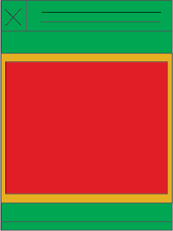
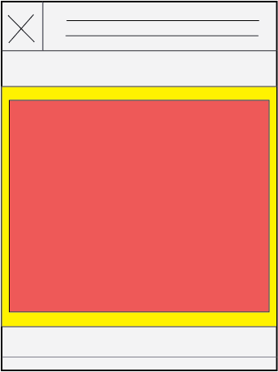
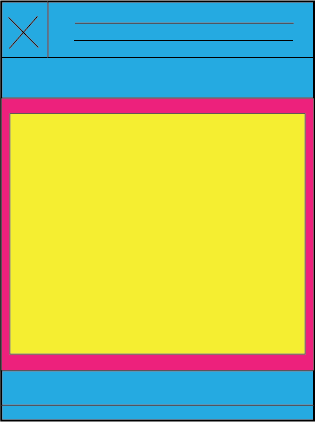
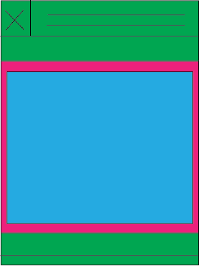
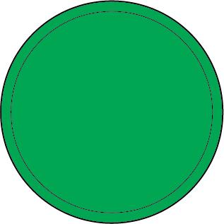
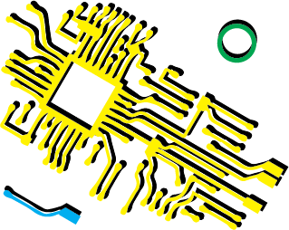
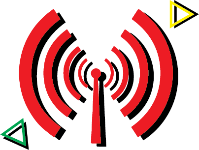
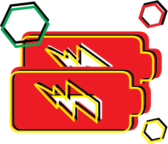
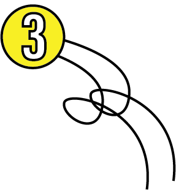

HELLO!





What are the hazards
of improper disposal
of used computers?
Come, I want to tell you something
about the fate of used computers.
It is known that the raw materials of computers contain at least 300 kinds of harmful substances to human bodies.Computers are made of all kinds of metals, glass and plastics. Manufacturers need more than 700 kinds of chemicals and heavy metals to make a computer.

The picture tube and circuit board of the
computer contain a lot of lead, which can damage the human nervous system, blood system and kidneys.
The display, the modem and the transformer that receive the high-frequency signal can emit electromagnetic waves.

The electromagnetic radiation is the most serious harm to human beings at present. It can disturb the natural physiological rhythm of the human body, causing headaches, insomnia, forgetfulness and other neurasthenia symptoms.

Hazards of waste batteries: the hazards of waste batteries are mainly concentrated in a small amount of heavy metals, such as lead, mercury and cadmium. These toxic substances enter the human body through a variety of ways, long-term savings difficult to eliminate,
How to deal with
used computers?
Convert your computer to a small
mainframe
Convert your computer to a small
mainframe
Convert your computer to a small
mainframe
For the host, remove the display and keyboard, buy a larger display, connect, a beautiful desktop computer to complete,
play games, watch movies, very practical.
WIFI hotspot, signal relay station, the home wireless signal is not good
WIFI hotspot, signal relay station, the home wireless signal is not good
WIFI hotspot
Signal relay station, the home wireless signal is not good, you can plug the computer into the Internet cable, through the WIFI software, use the computer's wireless network card as a signal transmitter, a good WIFI hotspot.

A computer with an optical drive can be used to play discs and listen to music.
A computer with an optical drive can be used to play discs and listen to music.
A computer with an optical drive can be used to play discs and listen to music.
There are many, many places that can be used. . . . . Those laptops that can't be turned on
After disassembling, the computer will be classified according to the material. The shell is classified as plastic parts, some metal brackets, heat-dissipating modules and the like according to the type of metal. These need not be said, everyone will have a lot in daily life. These materials can be sold to the tolls and then flowed into the resource recycling market for recycling.
THANK YOU!